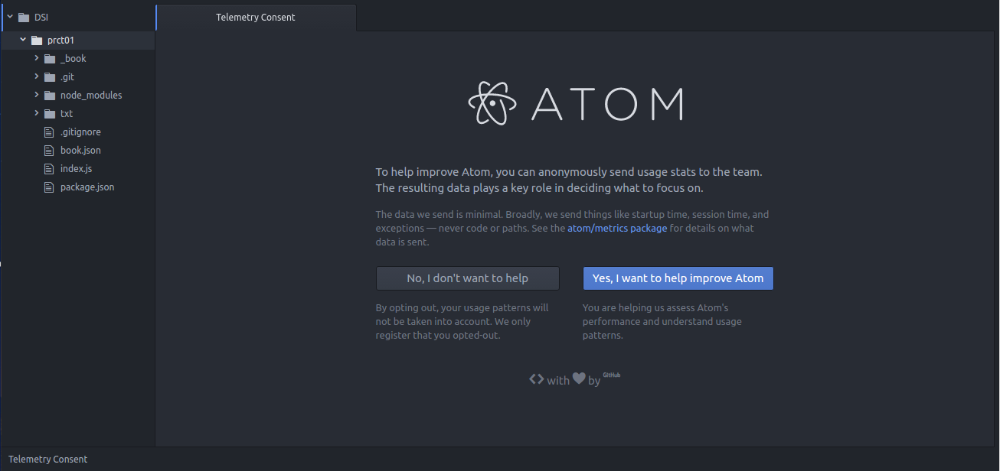

Se ha instalado Atom, el editor desarrollado por GitHub. Para ello hay que ejecutar los siguientes comandos en la consola:
sudo add-apt-repository ppa:webupd8team/atom sudo apt-get update sudo apt-get install atom
